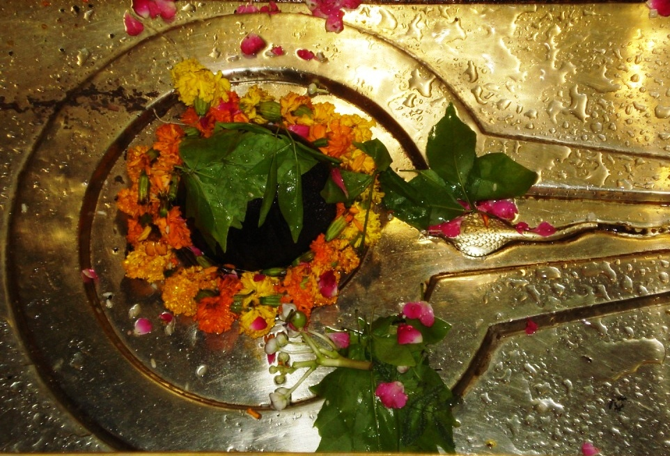
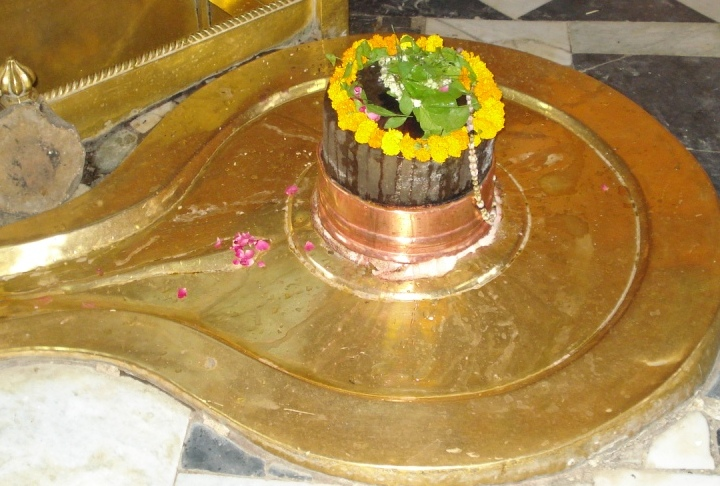

<?xml version="1.0" encoding="UTF-8"?><rss version="2.0"
	xmlns:content="http://purl.org/rss/1.0/modules/content/"
	xmlns:wfw="http://wellformedweb.org/CommentAPI/"
	xmlns:dc="http://purl.org/dc/elements/1.1/"
	xmlns:atom="http://www.w3.org/2005/Atom"
	xmlns:sy="http://purl.org/rss/1.0/modules/syndication/"
	xmlns:slash="http://purl.org/rss/1.0/modules/slash/"
	>

<channel>
	<title>Kameshwar &#8211; Varanasi Temples</title>
	<atom:link href="index.html" rel="self" type="application/rss+xml" />
	<link>../../../../../index.html</link>
	<description>Temples of Varanasi as referred to in Kashi Khand</description>
	<lastBuildDate>Thu, 19 Jun 2025 05:16:46 +0000</lastBuildDate>
	<language>en-US</language>
	<sy:updatePeriod>hourly</sy:updatePeriod>
	<sy:updateFrequency>1</sy:updateFrequency>
	<generator>https://wordpress.org/?v=4.6.29</generator>
	<item>
		<title>KAMESHWAR</title>
		<link>../../../../../shiva-temples/kameshwar/index.html</link>
		<pubDate>Sun, 09 May 2010 09:27:38 +0000</pubDate>
		<dc:creator><![CDATA[admin]]></dc:creator>
				<category><![CDATA[Kameshwar]]></category>
		<category><![CDATA[Other Shiva Temples (E-K)]]></category>
		<category><![CDATA[Shiva Temples]]></category>
		<category><![CDATA[kaameshwar]]></category>
		<category><![CDATA[kam]]></category>
		<category><![CDATA[kamesh]]></category>
		<category><![CDATA[kameshw]]></category>
		<category><![CDATA[kameshwar]]></category>
		<category><![CDATA[kamkund]]></category>

		<guid isPermaLink="false">../../../../../p=325.html</guid>
		<description><![CDATA[Lord Skanda (Kartikeya) was describing the Kashi Mahatmya to Agastya Rishi in Kashi Khand.  According to Lord, Durvasa Rishi (who is well known for his temper) travelled worldwide and reached Kashi.  He dug a kund (pond) for taking bath and installed a Shiv Ling nearby where  he performed pooja and archana of Lord Shiva. (KAMESHWAR) [&#8230;]]]></description>
				<content:encoded><![CDATA[<p>Lord Skanda (Kartikeya) was describing the Kashi Mahatmya to Agastya Rishi in Kashi Khand.  According to Lord, Durvasa Rishi (who is well known for his temper) travelled worldwide and reached Kashi.  He dug a kund (pond) for taking bath and installed a Shiv Ling nearby where  he performed pooja and archana of Lord Shiva.</p>
<p></p>
<p style="text-align: center;"><strong>(KAMESHWAR)</strong></p>
<p>For some reasons he got angry and was about to curse Kashi and its denizens. At this point, Lord Shiva appeared in person before him and Durvasa lost his anger.  Lord Shiva granted a divine wish to Durvasa.  Durvasa requested that the Kund dug by him should be known as Kamkund and the Ling installed by him should be called as Kameshwar Ling. Lord Shiva granted boon accordingly.</p>
<p>Lord Shiva said, when Saturday, Trayodashi (13<sup>th</sup> day after Amavasya or Poornima) and Pradosha day coincide, persons taking bath in Kamkund and performing pooja of Kameshwar are cleansed of all their sins, their wishes will be fulfilled and they will reach heaven after death. (Kashi Khand, Chapter 85).</p>
<p><strong> </strong></p>
<p>Kamkund is now fully dried up and apparently buildings have been constructed over the spot.  Instead of the bath envisaged in Kamkund, people take bath in river Ganges now.  In Kashi Khand there is mention of both Durvaseshwar Ling and Kameshwar Ling with reference to the above incident of Sage Durvasa.</p>
<div></div>
<p><strong><span style="text-decoration: underline;"> </span></strong></p>
<p style="text-align: center;"><strong>(DURVASESHWAR)</strong></p>
<h1>LOCATION OF THE TEMPLE</h1>
<p>Kameshwar Temple is located at A-2/9 North of Trilochan.  The temple is approachable from a famous locality called Prahlad Ghat (after Machhodari).  Devotees can travel upto Prahlad Ghat Chauraha by rickshaw and walk on foot to the temple.  There are two lings in the temple. The bigger Ling is referred to as Durvaseshwar Ling and the smaller Ling is referred to as Kameshwar Ling or Man Kameshwar Ling.  While Durvaseshwar Ling is symbolic of Bhakti, Kameshwar Ling symbolizes Shakti.</p>
<p>&nbsp;</p>
<p><strong>Please watch our YouTube Video about Kameshwar at following Link</strong></p>
<p>&nbsp;</p>
<p><a href="https://www.youtube.com/watch?v=ZrVdSI1zOKI&amp;t=11s">https://www.youtube.com/watch?v=ZrVdSI1zOKI&amp;t=11s</a></p>
<p>&nbsp;</p>
<p>&nbsp;</p>
<p><strong><span style="text-decoration: underline;">TYPES OF POOJAS</span></strong></p>
<p>The temple is open for worship from 05.00 a.m. to 12.00 Noon and 05.00 p.m. to 10.30 p.m.  Mangala Aarti is held at 5.30 a.m. and Shayan Aarti at 09.30 p.m.</p>
<p>According to the priest, if a person is afflicted with frequent bouts of anger on account of Mangal (Kuja) affliction, pooja etc. performed at this temple will rectify the problem.  For doing special pooja, it is advisable to consult the Poojari before hand.</p>
<h2></h2>
]]></content:encoded>
			</item>
	</channel>
</rss>
